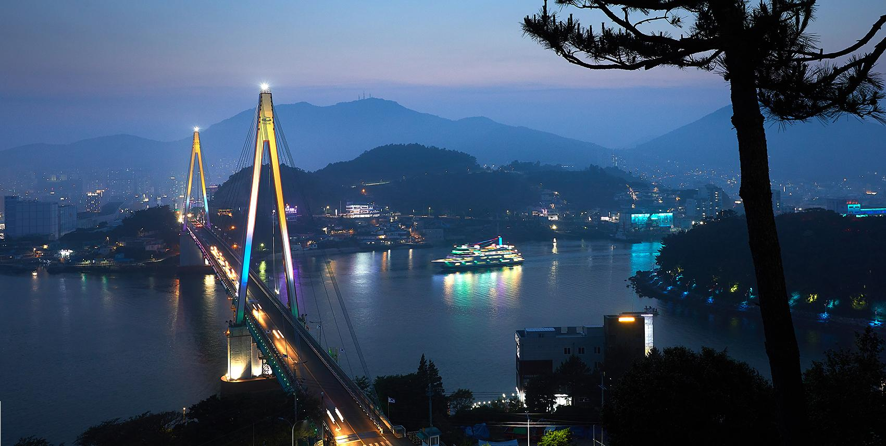
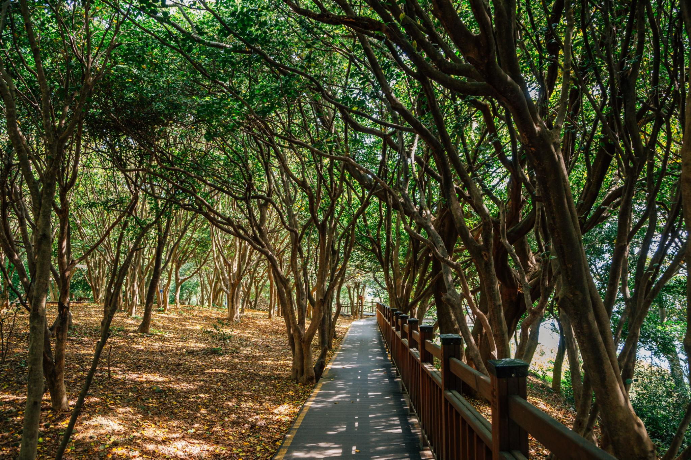

ESFJ 추천 여행지
전라남도 여수


추천 이유
ESFJ는 사람들과 함께 소중한 추억을 만들고 따뜻한 분위기를 즐기는 성향입니다. 여수는 아름다운 바다 풍경과 낭만적인 야경, 다양한 먹거리와 관광지를 함께 즐길 수 있어 가족이나 친구와 여행하기에 좋은 여행지입니다.
추천 여행 코스
- 오동도 산책
- 여수 해상 케이블카 탑승
- 이순신광장 방문
- 낭만포차거리 즐기기
- 버스킹 공연 관람
추천 포인트
- 낭만적인 여수 밤바다 감상
- 케이블카에서 바다 풍경 즐기기
- 다양한 먹거리와 해산물 맛집
- 가족·친구와 함께 추억 만들기 좋은 여행지